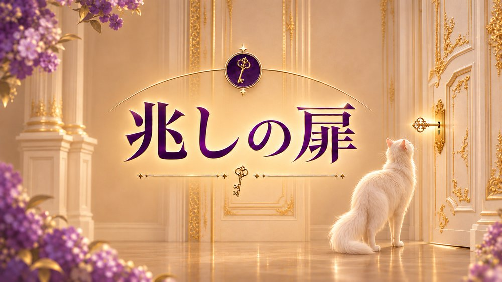

Aプラン
兆しの扉
まずは、いまの流れと
変化の兆しを知りたい方へ
5,980円(税込)
- 3枚のカード「スリーカード」による完全個別鑑定過去・現在・未来の流れを、まっすぐ読み解きます
- 約2,000文字の鑑定文をDMでお届け
- 実際に展開したカードのスプレッド画像をお届けあなたのために引いたカードを、その目で確かめられます
― この扉の先にあるもの ―
- いまの状況の「本当のところ」がまっすぐわかり、ひとりで考え込む夜に区切りがつく
- いま自分がどうすればいいかが見えて、心がふっと軽くなる
いま起きていることの意味と、
これから訪れる変化の兆しを、
短く、まっすぐお伝えします。